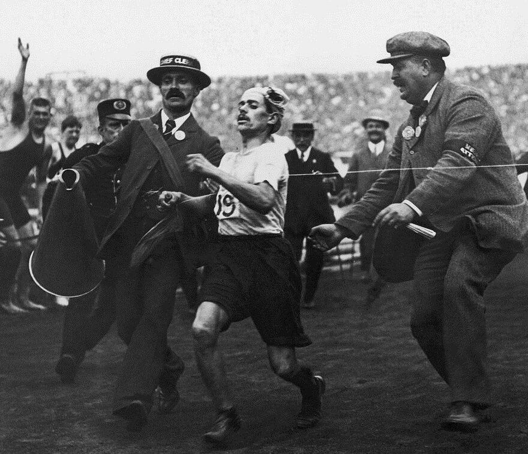
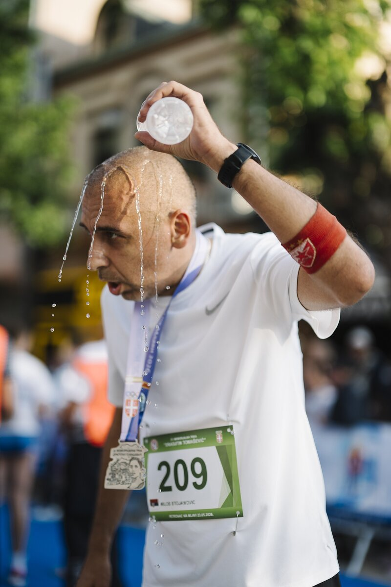
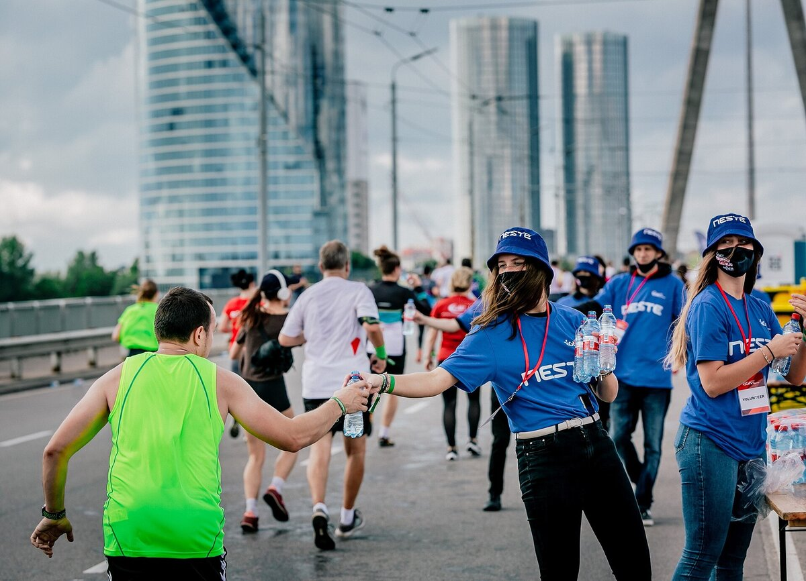

C1 · Science
Physiological Stressors in Endurance Running
Why runners are sick and why they nearly faint — six systems failing to keep up at once.
Play the audio and follow along, then read it again on your own. Tap or hover over a highlighted word to see what it means.
Exercise-induced vomiting and near-syncope — the sensation of being about to faint — are common during endurance events such as a ten-kilometer run, and they are a good deal more complex than they look. The phenomenon typically results from intense physical exertion, gastrointestinal distress, and inadequate physiological adaptation to extreme stress, acting together. Each of those factors sits at the intersection of the cardiovascular, respiratory, neurological and metabolic systems, all of which come under strain during prolonged exercise. Six mechanisms are worth examining in turn.
The first is the cardiovascular response itself. During prolonged aerobic exercise, the cardiovascular system is under heavy demand to deliver oxygen to the working muscles. Cardiac output rises, and blood is shunted away from the gastrointestinal tract to meet the metabolic demands of skeletal muscle. With circulation to non-essential organs reduced, the digestive system receives very little blood, struggles to absorb fluids and nutrients, and begins to register discomfort. The stomach becomes more sensitive, and nausea, then vomiting, become more likely. In some individuals, sustained cardiovascular stress also produces a brief, acute fall in blood pressure as they approach the limit of their endurance — which is what the sensation of near-fainting actually is.

The second is heat. Running generates a great deal of body heat, which the body sheds through sweating and increased blood flow to the skin. Thermoregulation, however, demands cardiovascular resources of its own. Combined with a hot day or a hard effort, core temperature can rise quickly, producing heat stress and dehydration. That thermoregulatory strain can temporarily impair brain function, since overheated neurons struggle to sustain normal activity, and the result is dizziness or near-syncope. Dehydration compounds all of it, lowering blood volume, hindering circulation and raising the risk of both vomiting and fainting.


The third is mechanical. Running exerts continuous mechanical stress on the abdominal organs, and the jostling agitates the stomach, particularly when there is food or fluid in it. Under intense exercise the lower esophageal sphincter, which normally keeps gastric contents from rising, can weaken — especially under the pressure changes produced by rapid breathing and the pounding of each stride. The body may then induce vomiting reflexively, to relieve the pressure of the gastric contents against the sphincter. Exercise also acts on the autonomic nervous system in ways that disturb gastric emptying: high-intensity running tends to delay it, leaving undigested food and fluid in the stomach longer than usual, which leads to nausea and eventually to vomiting.
The fourth is metabolic. Energy demand is high throughout a ten-kilometer run, and without adequate fueling a runner may become hypoglycemic, which brings weakness, dizziness and nausea. Hypoglycemia triggers the release of stress hormones such as cortisol and epinephrine, which raise blood sugar by mobilizing stored glucose from the liver. Those same hormones, however, also stimulate the vomiting center in the medulla. Meanwhile, as glucose falls, the brain is deprived of its primary fuel, which produces lightheadedness and the sense of impending faint. The condition is much more likely in runners who take in too little carbohydrate beforehand, or who run on an empty stomach.
The fifth is neurological and psychological. Endurance running makes considerable demands on the central nervous system, particularly when an athlete pushes past their established limits. As the CNS fatigues, it coordinates posture, balance and gastrointestinal regulation less well, and dizziness or fainting can follow. Psychological stress works in the same direction: performance anxiety, or simply the anticipation of exhaustion, heightens sympathetic activation, which disturbs the balance of the autonomic nervous system and aggravates both nausea and the feeling of near-syncope. Psychological stressors also change the perception of fatigue itself, through a cascade of neurochemical changes that can make the physical discomfort feel worse than it is.
The sixth is fluid and electrolyte balance, which is critical during prolonged exercise and easy to get wrong in either direction. Poor hydration practice can produce dehydration or, at the other extreme, hyponatremia — sodium diluted below the level the body needs. Both disrupt cellular fluid balance, impair cognition, cause disorientation and lead to vomiting. In severe cases they bring muscle cramps and abdominal discomfort, and compromise the brain's ability to maintain consciousness. Sodium depletion in particular interferes with neural signaling, and can produce nausea and confusion on its own.


Exercise-induced vomiting and near-syncope, then, are the visible end of a combination of mechanical, cardiovascular and neurological factors. As the body struggles to meet the demands of a prolonged run, several systems become overstressed at once, and the symptoms cascade. Understanding the interaction — between oxygen delivery, temperature regulation, metabolic stability and neural coordination — is also what explains why preparation, training and pacing prevent these outcomes far more reliably than toughness does.
Key Vocabulary
- syncope a temporary loss of consciousness — fainting
- exertion sustained physical effort
- cardiac output the volume of blood the heart pumps per minute
- to shunt to divert something, especially blood, from one route to another
- acute sudden and severe, rather than long-lasting
- to shed heat to get rid of excess body heat
- to compound to make an existing problem worse
- sphincter a ring of muscle that opens and closes a passage in the body
- reflexively automatically, without any conscious decision
- autonomic nervous system the part of the nervous system that runs the body's involuntary functions
- gastric emptying the rate at which the stomach passes its contents on
- to mobilize to release a stored resource so the body can use it
- medulla the lowest part of the brain stem, which controls automatic functions including vomiting
- impending about to happen
- sympathetic activation the fight-or-flight arousal of the nervous system
- cascade a sequence in which each event sets off the next
- hyponatremia a dangerously low concentration of sodium in the blood
- depletion the reduction of a supply to a level that causes problems
- to pace to control your speed so that effort lasts the whole distance
Physiological Stressors in Endurance Running — C1 · Science · Renan the Teacher, English Language Academy · https://renangrossi.github.io/englishclasses/reading/c1/physiological-stressors.html
Interactive Exercises
Practice
Complete each exercise, then click Submit to see your score and an explanation for every answer.
Speaking & Writing
Discussion
There are no right answers here — use these to practice speaking, or write a short answer to each.
- The conclusion implies that runners often treat these symptoms as a test of toughness. Why might a sport encourage that reading of them?
- Which of the six mechanisms is most within an athlete's control before the race begins? Which is least?
- The text is written for a reader who already knows some physiology. Rewrite its first paragraph for a reader who does not, without losing anything true.
- Fluid balance can go wrong in both directions. Where else in health or training does the safe course lie between two errors rather than at one end?
- Write about 250 words explaining to a first-time ten-kilometer runner how to avoid these outcomes, using the mechanisms rather than simply issuing rules.